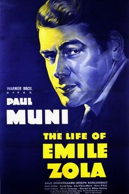

The Life of Emile Zola
10th Academy Awards
(Oscars 1938)
10 Nominations, 3 Awards
| Nominations | ||
|---|---|---|
| Category | Nominees | Result |
| Outstanding Production | Warner Bros. | Won |
| Actor | Paul Muni | Nominated |
| Actor in a Supporting Role | Joseph Schildkraut | Won |
| Directing | William Dieterle | Nominated |
| Assistant Director | Russ Saunders | Nominated |
| Writing (Original Story) | Geza Herczeg and Heinz Herald | Nominated |
| Writing (Screenplay) | Geza Herczeg, Heinz Herald, and Norman Reilly Raine | Won |
| Art Direction | Anton Grot | Nominated |
| Sound Recording | Nathan Levinson | Nominated |
| Music (Scoring) | Leo Forbstein and Max Steiner | Nominated |